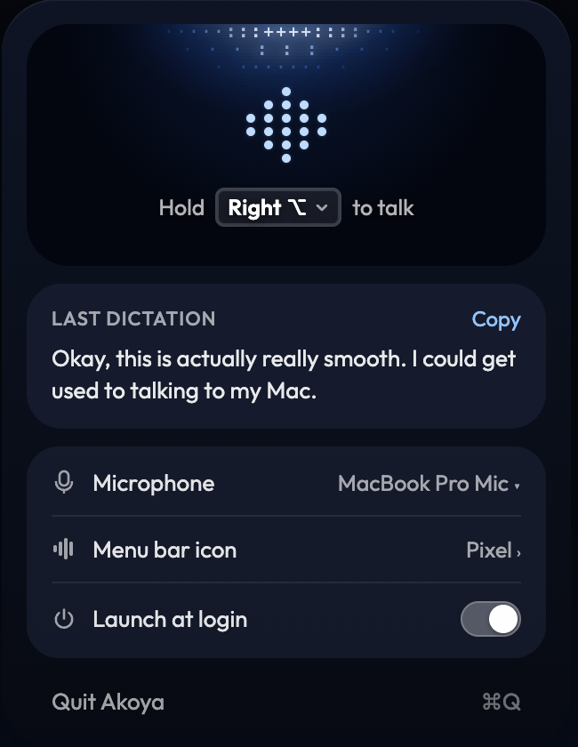
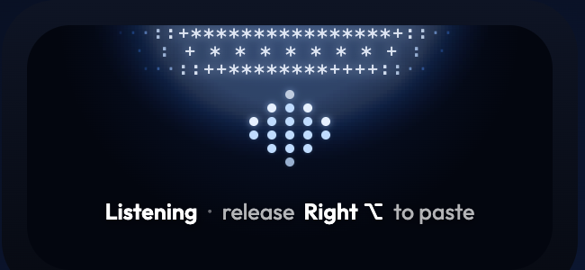
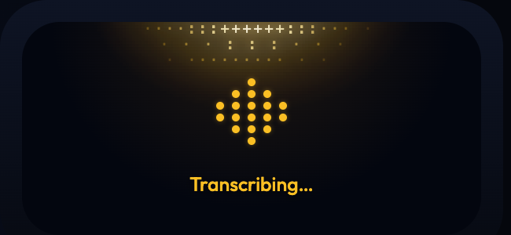

Today's Windows pill glows from a blue rim along its bottom edge. In B's style the glow moves to the top, like the card: a soft light from above that brightens with your voice, turns amber and sweeps back and forth while transcribing, and goes grey and still when something is wrong, with the words carrying the colour. Middle column: just the light. Right column: the light with one faint row of B's classic characters in its brightest part, to judge whether ASCII works at pill size. Live: the dots move and the light breathes. Actual size.



| TodayWindows pill as built | B · top lightglow from above, no characters | B · top light + charactersone faint row of · : + * | |||
|---|---|---|---|---|---|
| Listeningquiet | 0:04 | 0:04 | 0:04 | ||
| Listeningspeaking | 0:07 | 0:07 | 0:07 | ||
| Transcribingsweep | 0:09 | 0:09 | 0:09 | ||
| Pasted0.9 s | Pasted | Pasted | Pasted | ||
| Error1.6 s | !Speech model failed | Speech model failed | Speech model failed | ||
| Model loading1.6 s | Getting the speech model ready… | Getting the speech model ready… | Getting the speech model ready… |